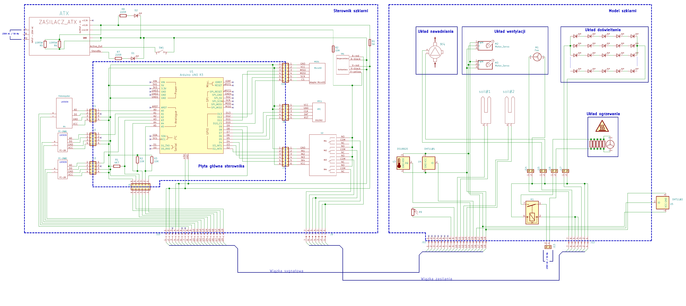
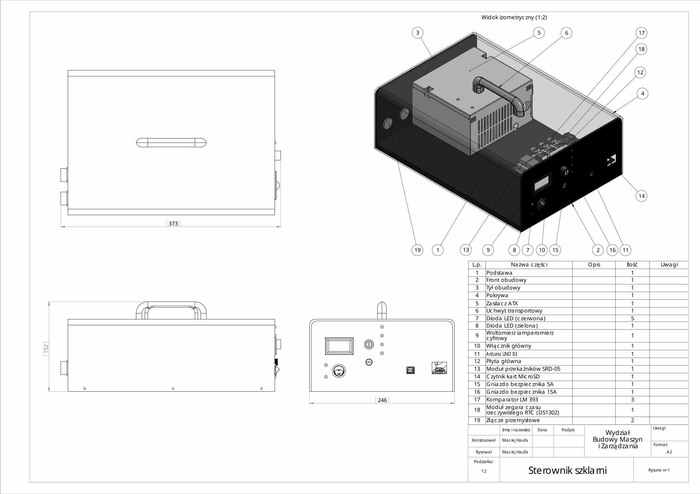
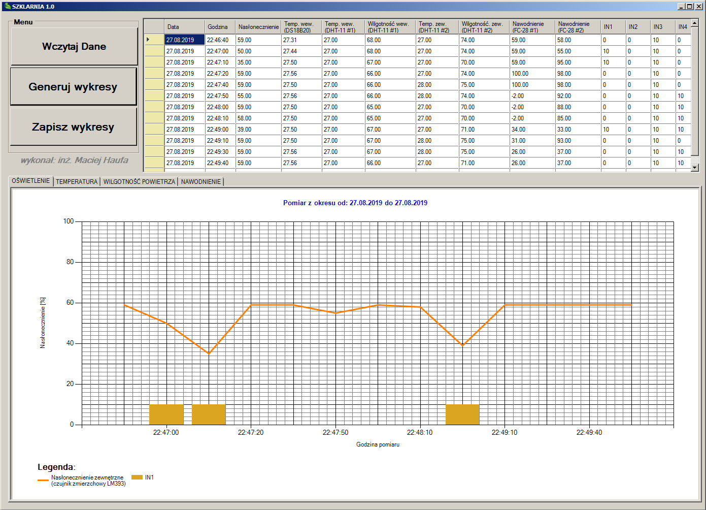

Academic Origins & Project Scope
Developed as my Master's Thesis, this project showcases a fundamental approach to closed-loop environmental control. Before the widespread dominance of modern IoT SOCs (like the ESP32), building reliable, standalone data acquisition and control systems required rigorous low-level hardware integration.
The goal was to design, manufacture, and program an autonomous greenhouse capable of tracking and adjusting its internal microclimate, logging operational data, and providing PC-based analytical tooling.
Hardware Architecture
The system relies on an 8-bit MCU processing a continuous feedback loop from multiple environmental sensors, driving corresponding mechanical and electrical actuators to maintain optimal growth conditions.
Sensory Inputs
- Temperature: DS18B20 (Internal & External)
- Humidity: DHT11 Sensors
- Illumination: LDR (Light Dependent Resistors) via LM393 comparators
- Soil: Moisture sensors
Actuators & Control
- Heating: Relay-driven resistance heater
- Lighting: Custom LED-GROW panel (4:1 Red/Blue ratio) via relays
- Ventilation: PWM-controlled servos for roof hatches and exhaust fans
- Irrigation: Relay-driven water pump
Engineering Documentation
A core component of the thesis was professional-grade documentation. I designed the electronic schematics using KiCad, ensuring proper power isolation between the logic level (5V) and the high-current actuators. The mechanical enclosure was modeled in 3D and documented using strict 2D academic drafting standards.


Desktop DAQ & Analytics App (C# .NET)
To validate the control algorithms, the MCU logged all sensor metrics and actuator states to an SD Card in a structured TXT format via SPI.
Instead of using off-the-shelf software, I developed a custom Windows desktop application using C# (.NET WinForms). The software parses the raw SD card data, populates a DataGridView for tabular inspection, and programmatically generates dynamic charts to visualize the performance of the climate control algorithms over time.
